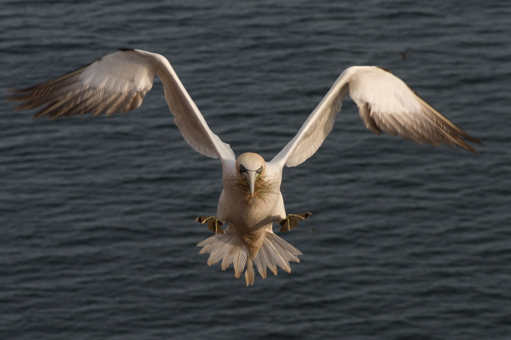
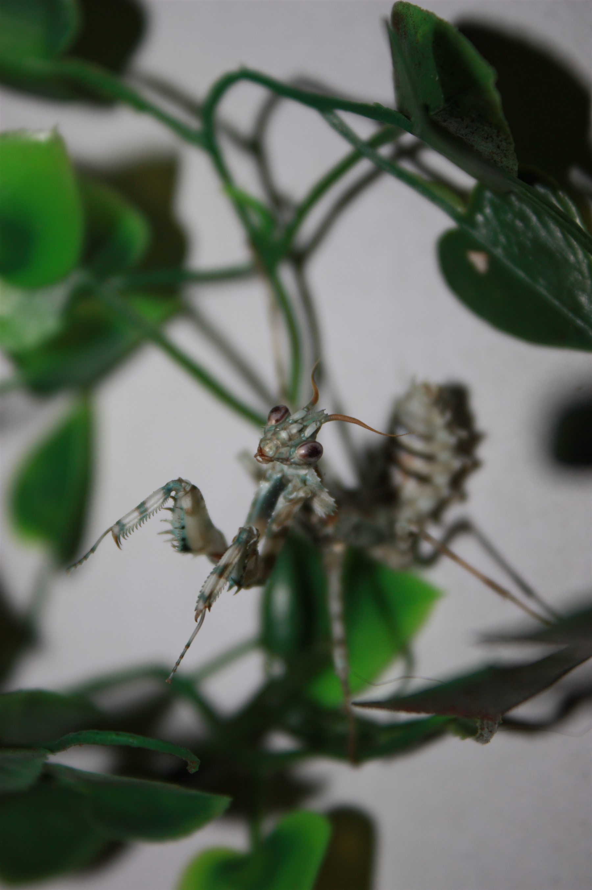

Norsk natur
Oter i vannet
Et nært møte åpner for historier om værhår, svømmeføtter, pels og livet mellom land og vann.
Norske naturfortellingerFor nysgjerrige barn
Kryp & Krabater følger dyrene dit nysgjerrigheten leder – fra små skapninger under føttene våre til fugler på bratte klipper, reptiler, pattedyr og ville dyr i norske fjell.
Dyr, natur og nysgjerrighet – fortalt for barn.
Velg et spor
Dette handler ikke bare om virvelløse dyr. Kryp & Krabater beveger seg mellom dyrerommet, fjæra, skogen og fjellet – alltid på jakt etter detaljen som kan gjøre et møte til en fortelling.

Møt moskus og oter, og lær hvordan kropp, pels og spor forteller hvor dyrene lever.
Følg sporet
Møt havsulen og ravnen, fra stupdykk i havet til problemløsning i vinterskogen.
Følg sporet
Møt kongesnok, teju og Sonja – og utforsk tungeflikk, solvarme og livet i vann.
Følg sporet
Møt skorpion, kneler, kakerlakker og Sabrina – dyr som belønner tålmodig observasjon.
Følg sporetØyeblikk fra felt og dyrehold
Et nært møte åpner for historier om værhår, svømmeføtter, pels og livet mellom land og vann.
En roligere og mer stabil sekvens som gir plass til å se hvordan fuglen beveger seg og bruker omgivelsene.
Små bevegelser viser hvordan nedbrytere, skjulesteder og mikrohabitater henger sammen.



Fra møte til forståelse
Et tungeflikk, et sansehår, et spor i snøen eller en fugl som vender tilbake til reiret kan begynne med et enkelt spørsmål. Målet er å svare tydelig, vise det virkelige dyret og samtidig gi plass til det neste spørsmålet.
Laget for unge seere
Kryp & Krabater er først og fremst norskspråklig. Språket, tempoet og fortellingene skal gjøre dyr og natur tilgjengelig for barn uten å forenkle bort det som gjør dyrene spennende.
Egne opptak og fotografier holder dyrene i sentrum – enten de lever i samlingen eller ble møtt ute i naturen.
Gift, rovdyr, uvante kroppsformer og dyreatferd forklares uten å gjøre dem til skremsler.
Hver fortelling skal gi mer oppmerksomhet til hagen, fjæra, skogen, fjellet eller dyrene som finnes nær hjemmet.
To prosjekter med samme utgangspunkt
Kryp & Krabater er den norskspråklige barnekanalen: brede dyrefortellinger, møter ute i naturen og filmer laget for unge seere.
Introvertebrates er den engelskspråklige fordypningen med den nåværende samlingen, artsprofiler, observasjoner fra dyrehold, fotografi og forskning.
English summary: Kryp & Krabater is a Norwegian-language animal and nature project for curious children, connected to the deeper English-language Introvertebrates project.